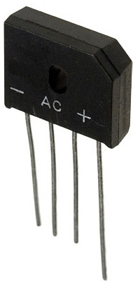
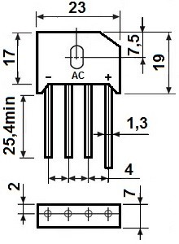

Диодный мост RS602

Рис. 1 - Внешний вид диодного моста PBL405
Таблица 1
| Парметр | Значение |
|---|---|
| Максимальное постоянное обратное напряжение | 100 В |
| Максимальное прямое напряжение | 1 В |
| Максимальный постоянный прямой ток | 6 А |
| Емкость диодного моста | 186 пФ |
| Рабочая температура | -55…150 °С |
| Тип корпуса - | KBU |

Рис. 2 - Размеры диодного моста RS602